THEMES RELEVANT: GROWING UP, IDENTITY, FAMILY
narrative based around the same message/theme
THE COMPLEX, UNAPOLOGETICALLY RAW MOTHER-DAUGHTER RELATIONSHIP
LADYBIRD, Greta Gerwig, 2017
AUDIENCE RECEPTION: 99% Rotten Tomatoes🍅 // 7.4/10 IMDb // 4/5 Common Sense Media
HOW HAS MEANING BEEN DELIVERED THROUGH STRUCTURAL AND/OR AESTHETIC QUALITIES? One notable structural technique is the use of contrasting visual and emotional tones in scenes depicting their interactions. For instance, moments of intimacy and tenderness between Lady Bird and Marion are often juxtaposed with moments of tension and conflict, highlighting the fluctuating nature of their relationship. Additionally, Gerwig employs aesthetic choices such as framing and lighting to visually underscore the emotional dynamics at play. Close-up shots during heated arguments amplify the intensity of emotions, while softer lighting during quieter moments reflects moments of vulnerability and connection. Furthermore, the nonlinear narrative structure allows viewers to witness the evolution of Lady Bird and Marion's relationship over time, as they navigate through various ups and downs. Through these structural and aesthetic choices, Gerwig effectively communicates the depth and complexity of the mother-daughter bond, capturing the nuances of love, frustration, and growth that characterise their relationship.
“Do you like me?” Lady Bird asks.
“Of course I love you,” her mom replies
“But do you like me?” she wants to know.
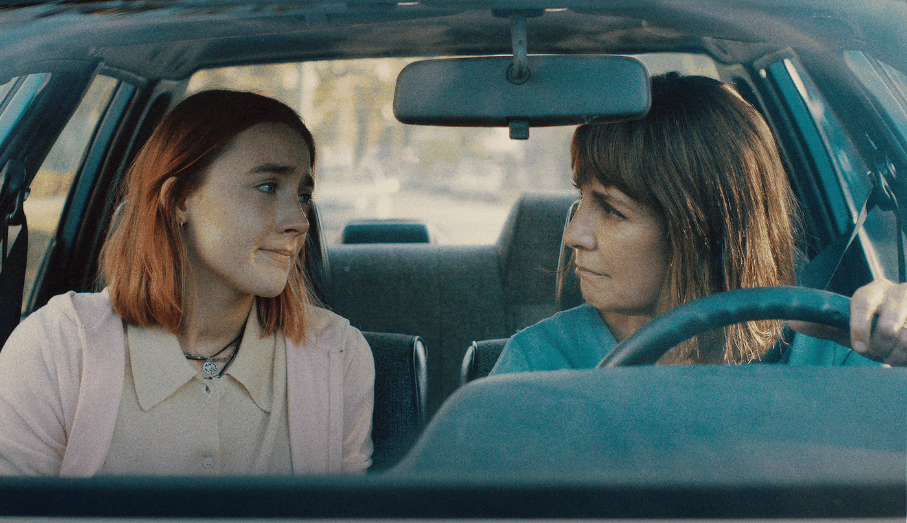
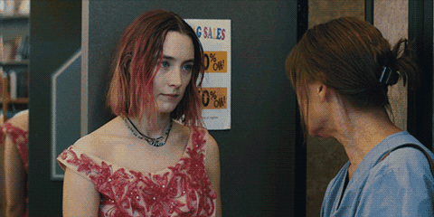
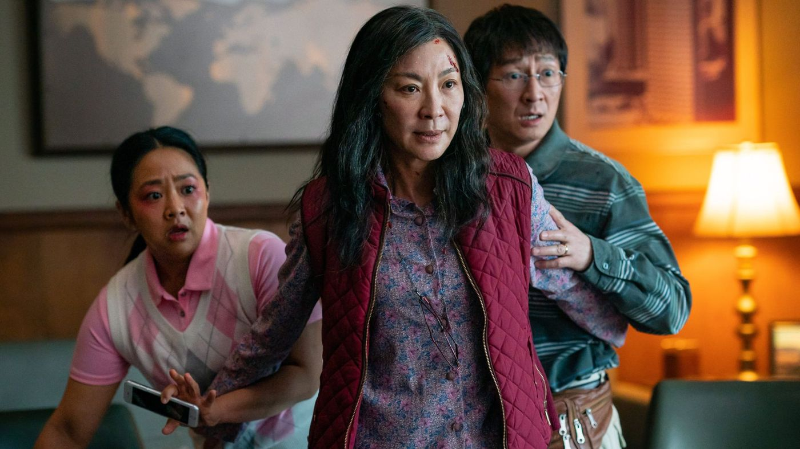
EVERYTHING, EVERWHERE ALL AT ONCE Daniel Kwan & Daniel Scheinert, 2022
AUDIENCE RECEPTION: 93% Rotten Tomatoes🍅 // 7./810 IMDb // 81% Metacritic
HOW HAS MEANING BEEN DELIVERED THROUGH STRUCTURAL AND/OR AESTHETIC QUALITIES? A structural technique is the use of parallel editing and nonlinear storytelling to interweave moments from their past and present interactions. This allows viewers to understand the evolution of their relationship over time and the underlying emotional dynamics at play. Additionally, the filmmakers employ aesthetic choices such as lighting and colour palettes to visually depict the shifting moods and emotions within their interactions. For example, scenes featuring Joy and Evelyn often utilise warm and vibrant colors to convey moments of connection and intimacy, while cooler tones may signify moments of conflict or distance.
An example of a scene where Joy and Evelyn come to terms and reconcile occurs outside of their shop, where they have a heart-to-heart conversation amidst a backdrop of chaos and uncertainty. As they confront their past traumas and misunderstandings, the filmmakers utilise close-up shots and intimate framing to highlight the raw emotions and vulnerability of both characters. The use of natural lighting and soft focus enhances the emotional resonance of the scene, allowing viewers to empathise with the characters' journey towards reconciliation. Through this poignant moment, viewers witness the healing power of forgiveness and the strength of the mother-daughter bond, as Joy and Evelyn find solace and understanding in each other's presence.
THEME THROUGH NOVELS...
all commenting on relationships within family (the asian perspective and experience)
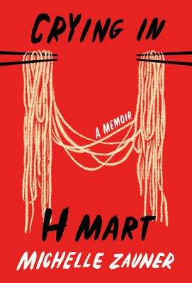
AUDIENCE RECEPTION: ⭐⭐⭐⭐/5, GOODREADS https://www.goodreads.com/en/book/show/54814676
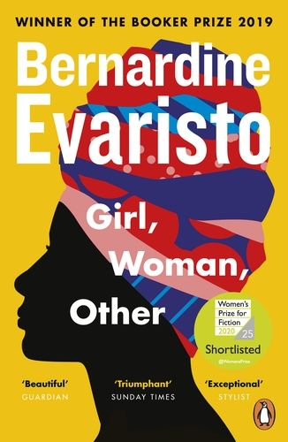
AUDIENCE RECEPTION: ⭐⭐⭐⭐/5, GOODREADS https://www.goodreads.com/book/show/41081373-girl-woman-other?from_search=true&from_srp=true&qid=cdRHLA5QaH&rank=1
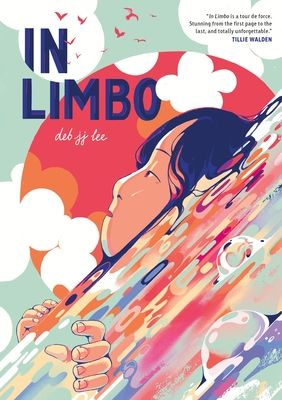
AUDIENCE RECEPTION: ⭐⭐⭐⭐/5, GOODREADS https://www.goodreads.com/book/show/60316964-in-limbo?from_search=true&from_srp=true&qid=Q2mQQJadgy&rank=1
the hero's journey
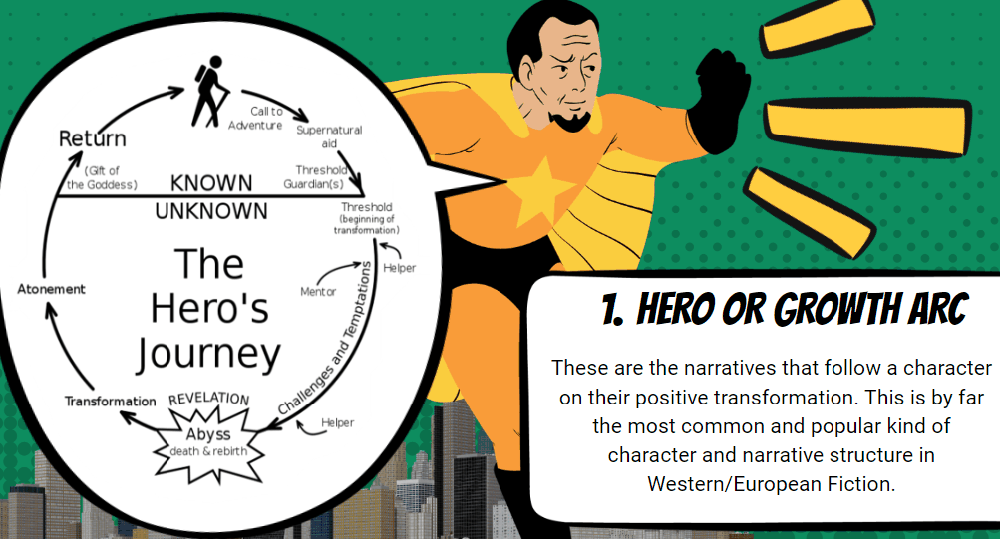
The Hero's Journey is a narrative framework that outlines the journey of a protagonist as they undergo personal growth and transformation. It was popularised by Joseph Campbell in his book "The Hero with a Thousand Faces." The Hero's Journey typically consists of several stages, including the call to adventure, meeting mentors and allies, facing challenges and enemies, undergoing a transformation or ordeal, and ultimately returning home with newfound wisdom or insight.
In the fantasy genre, the Hero's Journey is a common convention because it allows authors to explore themes of self-discovery, overcoming adversity, and the battle between good and evil. Fantasy stories often feature protagonists who embark on epic quests or adventures, encountering magical beings, fantastical creatures, and otherworldly landscapes along the way. The Hero's Journey provides a structured framework for these narratives, allowing authors to create compelling stories that resonate with readers by tapping into universal themes of heroism, sacrifice, and redemption.
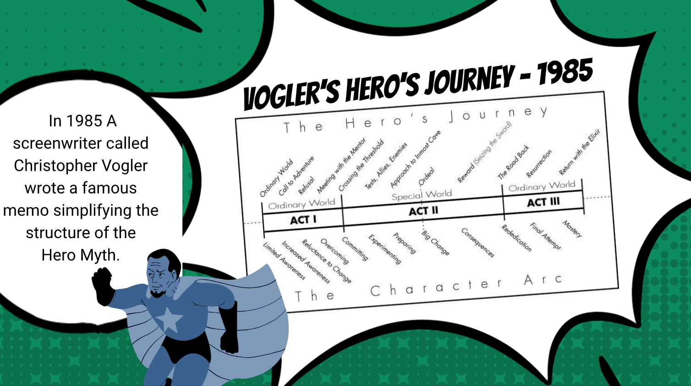
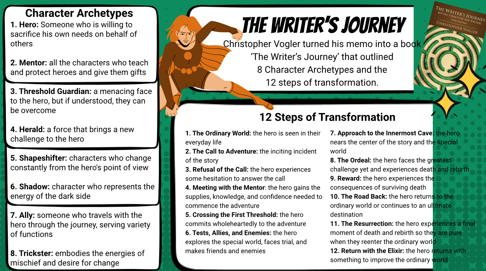
TAKE-AWAY
My story can be mapped onto the Hero's Journey narrative structure, in this rough outline.
By following this narrative structure, my main characters undergoes a journey of self-discovery, facing challenges, confronting her past, and ultimately finding redemption and reconciliation with her mother.
ORDINARY WORLD: The story begins with the protagonist, MC , in her ordinary world - her backyard garden. She is dealing with conflict in her relationship with her mother and is longing for change.
CALL TO ADVENTURE: MC's journey begins when she hears a mysterious sound and discovers the plate of fruit left by her mother. This serves as the catalyst for her departure from her ordinary world.
REFUSAL OF THE CALL: MC initially refuses her mother's gesture and runs away from home, symbolising her reluctance to confront her issues.
MEETING THE MENTOR: The garden with the ominous gate represents the threshold into the unknown, and MC's entry into it signifies her meeting with the mentor figure - the garden itself. The garden guides her and reveals its secrets to her, offering wisdom and insight
CROSSING THE THRESHOLD: MC crosses the threshold into the garden, entering a new and unfamiliar world that holds both beauty and mystery.
TEST, ALLIES AND ENEMIES: MC encounters challenges and revelations in the garden, uncovering secrets and confronting her inner demons. She forms a deeper connection with the garden and its inhabitants, who become her allies in her journey of self-discovery.
APPROACH TO THE INMOST CAVE: MC 's return home and subsequent fight with her mother represent her approach to the inmost cave - the heart of her conflict and emotional turmoil.
ORDEAL: MC's discovery of the ruined garden and the revelation of its true nature as her mother symbolize the ordeal she must face - the truth about her relationship with her mother and the importance of confronting her past.
REWARD (SEIZING THE SWORD) MC's reconciliation with her mother in the garden represents her seizing the metaphorical sword - the resolution of her inner conflict and the acceptance of her past
THE ROAD BACK: MC wakes up in her backyard, startled and disoriented, symbolising her return to the ordinary world with newfound insight and understanding.
RESURRECTION: MC's realization that her mother is gone and the half-opened pomegranate left behind suggest a symbolic death and rebirth, marking MC 's transformation and the beginning of a new chapter in her life.
RETURN WITH THE ELIXIR: MC returns to the house and her mother's disappearance imply that Maya has gained a valuable elixir - the wisdom and understanding needed to heal her relationship with her mother and move forward in
save the cat!
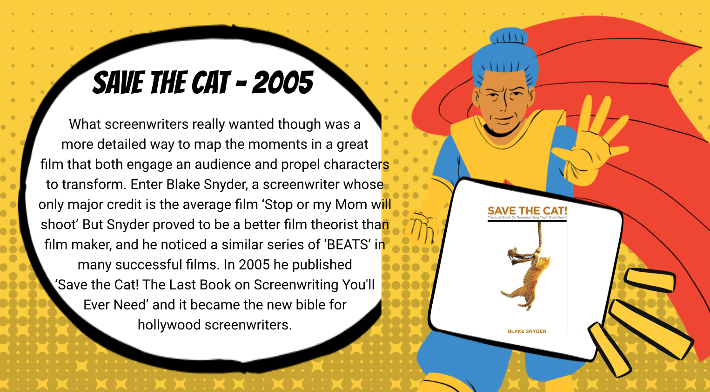
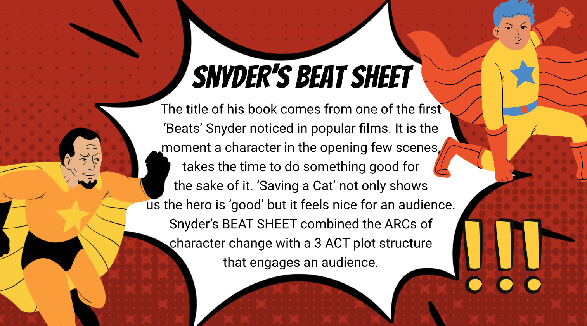
The Save the Cat narrative structure, popularized by screenwriter Blake Snyder, emphasises the importance of creating engaging stories with relatable characters and emotional arcs. It consists of several key beats, including the introduction of the protagonist, the catalyst that sets the story in motion, the midpoint shift, the low point or "All is Lost" moment, and the resolution. This structure is often used in fantasy literature to create compelling narratives that capture the imagination of readers. By following the Save the Cat structure, fantasy authors can craft stories that not only feature epic quests and magical worlds but also resonate with readers on an emotional level by exploring themes of heroism, sacrifice, and redemption.
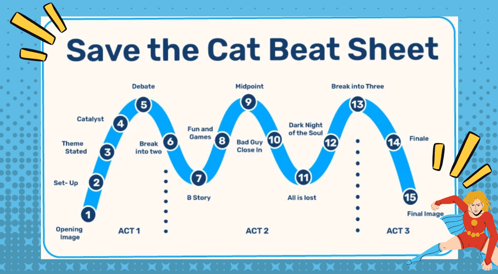
In my narrative, the Save the Cat structure can be seen as the MC's journey of self-discovery and reconciliation with her mother. The introduction of MC in her backyard, staring at a small pocket of water and reminiscing on her argument with her mother, establishes her as the protagonist with a desire for change. The catalyst occurs when Maya discovers the mysterious garden beyond her backyard gate, setting her on a path of exploration and revelation. Throughout the story, MC encounters allies and adversaries in the form of the garden's secrets and inhabitants, leading to tests, revelations, and ultimately, her reconciliation with her past. The low point comes when MC discovers the ruined garden and realises the true nature of its connection to her mother, representing her emotional nadir. However, through facing her inner demons and gaining insight into her past, MC experiences a transformation and returns to her ordinary world with newfound wisdom and understanding, completing her Save the Cat journey.
APPLICATION
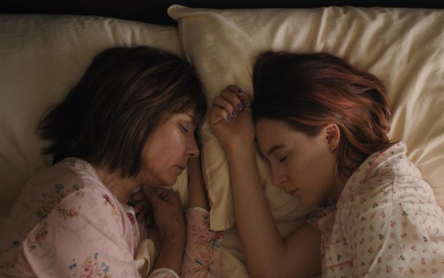
OVERARCHING MESSAGE: explores themes and narratives showcasing the many complex relationships older-adolescents experience apart of growing up, in their journey of self and identity; particularly focusing on the ever-changing, and complicated tensions between a daughter and her mother. additionally, the relationship of maturing and moving on.
EVALUATE WHAT CODES/COVENTIONS USED TO STRUCTURE AND CONVEY MEANING:
ACTING
FACIAL EXPRESSIONS - To portray each emotion/feeling/expression in a way that will engage and connect with the audience, as it is central to my final product.
BODY LANGUAGE - To further express what the subject is feeling and my interpretation of each emotion/feeling/expression that I feel the audience will connect with.
COLOUR - To help portray each emotion/feeling/expression being depicted in each photograph. A set colour palette will be selected for each image to separate each emotion and be used to bring out the subjects features and expression.
LIGHTING
HIGH-KEY - To enhance the more positive emotions/feelings/expressions such as elation and adoration.
LOW-KEY - To further enhance the more negative, dramatic or mysterious emotions/feelings/expressions such as depression, longing and fear.
SHOT SIZE
CLOSE UP - To create a connection between the audience and the subject that is intimate, in a way that isn't suffocating but is still very much so relatable.
MID SHOTS - To allow the audience to read into the subjects body language and how she is positioned within the shot.
HOW WILL I STRUCUTRE TIME IN THE DELIVERY OF MY PRODUCT'S NARRATIVE? WHAT EFFECT WILL IT HAVE ON MY AUDIENCE'S ENGAGEMENT AND READING OF PRODUCT?
My media product will utilise various visual and narrative techniques to convey the passage of time effectively. By incorporating outfit changes, you can visually signify the progression of time and character development. For example, subtle alterations in clothing styles or accessories can reflect changes in seasons, occasions, or character moods, providing visual cues that guide the audience through the narrative timeline. Weather patterns serve as a powerful storytelling tool, allowing you to evoke mood, atmosphere, and thematic elements. Transitioning between different weather conditions, such as sunny days, stormy nights, or misty mornings, can mirror the emotional states of the characters or signify shifts in the plot dynamics. Changes in the environment, such as overgrowth and added clutter over time, visually represent the passage of time and the evolution of settings. By gradually transforming the surroundings through subtle details like vegetation growth, accumulating debris, or architectural decay, you can create a sense of progression and immersion that enhances the audience's engagement with the story. Transitions between day and night, as well as whenever your character wakes up or goes to bed, help to establish the rhythm and flow of the narrative. These shifts in time not only advance the plot but also provide natural breaks in the storytelling that allow readers to digest information and anticipate what happens next.
Effectively structuring time in your graphic novel narrative using these visual cues enhances audience engagement by creating a dynamic and immersive storytelling experience. These visual and narrative techniques provide readers with subtle cues that guide them through the passage of time, deepen their connection to the characters, and enrich their understanding of the narrative world, ultimately leading to a more compelling and satisfying reading experience.
Additionally structring time in a graphic novel is akin to orchestrating a symphony, where each panel, page turn, and narrative choice harmonises to create a seamless flow of storytelling. The pacing of events, the sequencing of scenes, and the timing of reveals all contribute to the overall rhythm and cadence of the narrative. By strategically utilising techniques such as panel layout, page turns, flashbacks, and symbolic imagery, creators can manipulate the passage of time within the story, guiding readers through moments of tension, revelation, and emotional resonance. This careful orchestration of time not only enhances the engagement and immersion of the audience but also allows for the nuanced exploration of themes, character development, and plot progression. Ultimately, a well-structured narrative in a graphic novel captivates readers, drawing them deeper into the world of the story and leaving a lasting impact long after the final page is turned.